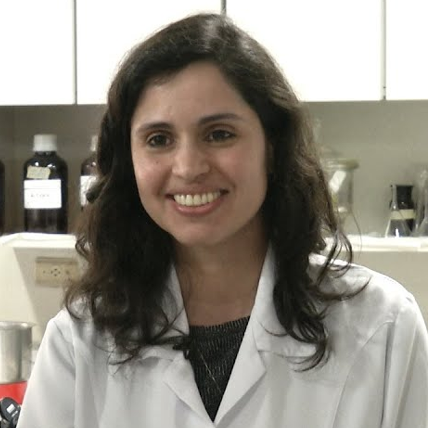
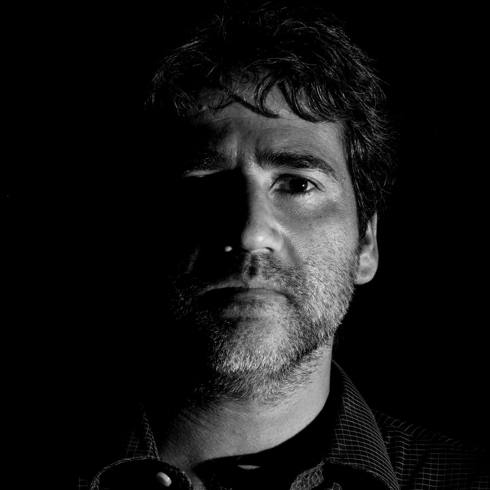

Dra. Aline Silva de Miranda
Professora/Pesquisadora pelo Departamento de Morfologia da Universidade Federal de Minas Gerais-UFMG, Brasil. Tem experiência nas áreas de neurociência comportamental e cognitiva e neuroimunologia experimental e clínica com foco em traumatismo cranioencefálico e doenças neurodegenerativas especialmente doença de Parkinson, tendo publicado mais de 100 trabalhos em periódicos científicos de relevância para a área. Ingressou recentemente (2025) como membro do comitê central da PNIRS Ibero-América e tem se dedicado em conjunto com a equipe em promover avanços no campo da psiconeuroimunologia, em especial em regiões Ibero-americanas.

Dra. Ana Rosa Perez
Pesquisadora/Professora da Faculdade de Ciências Médicas da Universidad Nacional de Rosario, Argentina. Atualmente é diretora do Instituto de Inmunología Clínica y Experimental de Rosario (IDICER CONICET UNR). Ampla experiência na área de Imunoendocrinologia, com foco na doença de Chagas.

Dr. Antônio Lúcio Teixeira
Neurologista, psiquiatra e pesquisador pela University of Texas Health Science Center at San Antonio, TX, USA. Tem experiência nas áreas de neurologia cognitiva e comportamental, psiquiatria geriátrica e neuroimunologia, tendo publicado mais de 900 artigos em periódicos científicos relevantes para a área.

Dra. Daniela Caldeira Costa Calsavara
Professora/Pesquisadora pelo Departamento de Ciências Biológicas da Universidade Federal de Ouro Preto-UFOP, Brasil. É pesquisadora líder do grupo de pesquisas do CNPq intitulado "Estudo das alterações imunometabólicas induzidas por compostos bioativos, fitoterápicos e fármacos em modelos experimentais de doenças metabólicas, infecciosas e agravos".
Dr. Diego Gomez-Nicola
Pesquisador e Professor de Neuroimunologia pela University of Southampton, Reino Unido. Tem se dedicado a investigar o papel da microglia e outras células da glia em doenças neurodegenerativas, com foco em doença de Alzheimer e demências relacionadas e doenças priônicas.
Dr. Eduardo Arzt
Pesquisador Titular do Biomedicine Research Institute of Buenos Aires (IBioBA, CONICET-Partner Institute of the Max Planck Society). Pesquisador líder do grupo de pesquisa “Neuro-endocrine tumors: cellular and molecular mechanisms” junto ao IBioBA.
Dra. Eliana Cristina de Brito Toscano
Professora/Pesquisadora pela Faculdade de Medicina da Universidade Federal de Juiz de Fora (UFJF), Brasil. É pesquisadora líder do grupo de Neuroimunologia Translacional junto ao CNPq e tem experiência no estudo de processos imune/inflamatórios envolvidos em doenças neurológicas e neurodegenerativas, com foco em epilepsia e doença de Alzheimer, respectivamente.
Dra. Elisa Caetano-Silva
Jovem pesquisadora pela University of Illinois at Urbana- Champaign, IL, USA. Tem se dedicado a investigar o eixo cérebro-intestino microbiota- sistema imunológico, particularmente durante o envelhecimento ou estresse psicológico. É membro da Sociedade de Neurociências e Comportamento (SBNeC) e PNIRS, e cofundadora e co-presidente da PNIRS Ibero-América, contribuindo ativamente para o avanço da pesquisa em psiconeuroimunologia, especialmente na expansão da rede na região Ibero-América.
Dra. Érica Leandro Marciano Vieira
Pesquisadora pelo Centre for Addiction and Mental Health (CAMH) e pelo Department of Psychiatry at the University of Toronto, Canada. Tem se dedicado a investigar o papel de biomarcadores periféricos e vesículas extracelulares em transtornos neurodegenerativos, transtornos de humor e disfunção cognitiva, tendo publicado mais de 145 trabalhos em periódicos científicos de relevância para a área.
Dr. George Eduardo Gabriel Kluck
Professor/Pesquisador pelo Departamento de Morfologia da Universidade Federal de Minas Gerais-UFMG, Brasil. Tem experiência na área de metabolismo de lipídios e sinalização celular em doenças infecciosas e doenças neurodegenerativas.
Dr. Hugo Pellufo
Líder do grupo de Interações Neuroimunes na Faculdade de Medicina da Universidade de Barcelona. Sua pesquisa se concentra na biologia das células gliais, receptores imunes e neuroinflamação, especialmente no papel dos receptores imunológicos lipídicos da micróglia/macrófagos. Com experiência na Universidade da República, no Institut Pasteur de Montevidéu e na Universidade Autônoma de Barcelona, investiga como esses receptores regulam a inflamação, a imunometabolismo e a poda sináptica em doenças neurodegenerativas.
Dr. Jonathan Godbout
Pesquisador pela The Ohio State University, OH, USA. Tem se dedicado a investigar como fatores como o envelhecimento, o estresse psicológico e lesões traumáticas cerebrais podem afetar a comunicação bidirecional entre o sistema imunológico e o sistema nervoso central.
Dra. Luciana Estefani Drumond de Carvalho
Pesquisadora do Programa Multicêntrico de Pós-Graduação em Bioquímica e Biologia Molecular da Universidade Federal de São João Del Rei- UFSJ, Brasil. Tem se dedicado à identificação e caracterização de derivados de esteroides cardiotônicos com potencial terapêutico, avaliados em modelos experimentais de epilepsia, acidente vascular cerebral e neuroinflamação, entre outras condições neurológicas.
Dra. Melissa Rosenkranz
Pesquisadora pelo Department of Psychiatry da University of Wisconsin-Madison, USA. Tem se dedicado a investigar o papel da interação entre o sistema imunológico e sistema nervoso em aspectos emocionais, com experiência nas áreas de neurociência, psiconeuroimunologia e neuroimagem.
Dr. Moisés Evandro Bauer
Professor Titular de Imunologia da Escola de Ciências da Saúde e da Vida (PUCRS). Pesquisador do Laboratório de Imunobiologia (PUCRS) e do Instituto Nacional de Ciência e Tecnologia em Neuroimunomodulação (INCT-NIM). Tem ampla experiência nas áreas de Neuroimunologia e Imunossenescência com foco nos mecanismos psiconeuroendócrinos do envelhecimento precoce do sistema imune em várias populações humanas, incluindo idosos saudáveis, pacientes com transtornos neuropsiquiátricos e pacientes com doenças autoimunes.
Dra. Natalia Pessoa Rocha
Pesquisadora pela University of Texas Health Science Center at Houston, TX, USA. Tem experiência no estudo de parâmetros imunológicos/inflamatórios associados à fisiopatologia da doença de Huntington e outras doenças neurodegenerativas, tendo publicado mais de 90 trabalhos em periódicos científicos de relevância para a área.
Dr. Nicolas Rohleder
Professor Titular de Psicologia da Saúde na Friedrich-Alexander-Universität Erlangen-Nürnberg (Alemanha) e Professor Associado de Pesquisa na Brandeis University. Sua pesquisa foca nos mecanismos psicobiológicos que conectam o estresse e a inflamação. Com ampla experiência em psiconeuroendocrinologia, recebeu prêmios como o Herbert Weiner Early Career Award da American Psychosomatic Society.
Dra. Ruth Barrientos
Professora Associada no Departamento de Psiquiatria e Saúde Comportamental no Instituto de Pesquisa em Medicina Comportamental da The Ohio State University. Membro do comitê da PNIRS Ibero-América e presidente eleita da PNIRS para o próximo ano. Neurocientista comportamental, sua pesquisa examina o impacto da inflamação nos déficits cognitivos, especialmente no envelhecimento e em doenças neurodegenerativas. Seu objetivo é desenvolver intervenções para prevenir e reverter declínios de memória associados a gatilhos neuroinflamatórios.
Dra. Vivian Vasconcelos Costa
Professora/Pesquisadora pelo Departamento de Morfologia da Universidade Federal de Minas Gerais-UFMG, Brasil. Membro da Academia Brasileira de Ciências desde 2021, tem experiência no desenvolvimento de diferentes plataformas, incluindo modelos humanizados, para estudar a patogênese e testar terapias inovadoras focadas em doenças infeciosas, especialmente virais.
Dr. Wilson Savino
Pesquisador Titular da Fundação Oswaldo Cruz (Fiocruz-RJ). Coordenador do INCT de Neuroimunomodulação pelo Ministério da Ciência e Tecnologia, da rede FAPERJ em Neuroinflamação, da rede INOVA-IOC em Neuroimunomodulação, e coordenador pelo Brasil da Rede Pesquisa, Biotecnologia e Educação aplicas à Saúde (FOCEM/MercoSul).